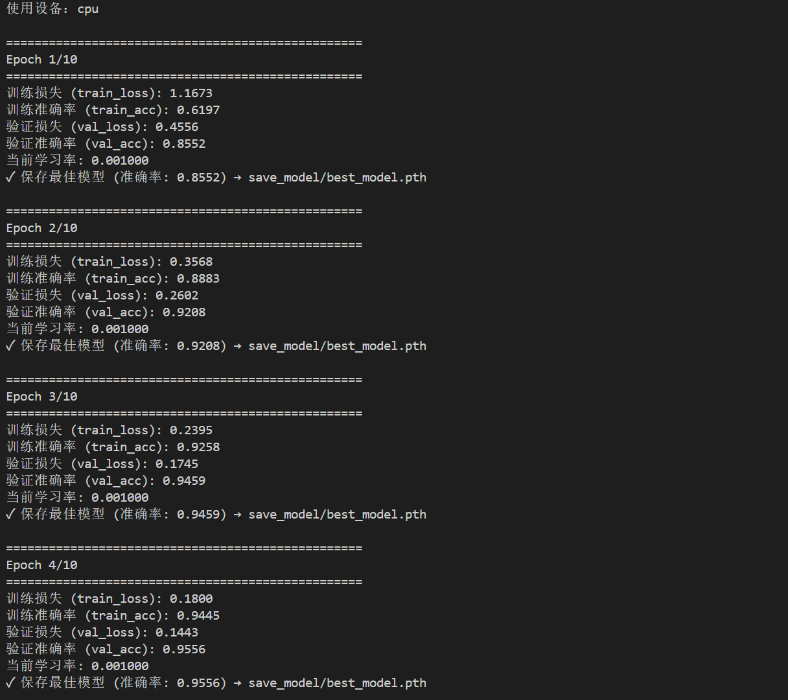
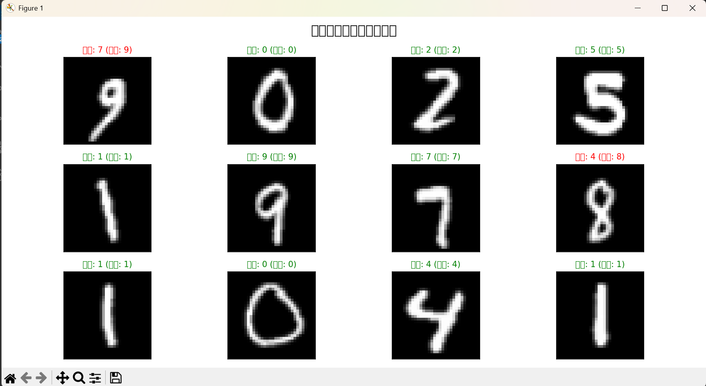

前言
大一人工智能通识课（一个无用的水课？）上看到了一个深度学习项目，然后就想试一下这个经典项目——手写数字识别（MNIST）。选择了 LeNet-5 这个轻量级卷积神经网络，最终模型在测试集上达到了约 98.7% 的准确率，之后有时间还会完善（或许）。
项目背景
- 数据集：MNIST —— 6 万张 28×28 灰度训练图片，1 万张测试图片，共 10 个数字类别（0~9）。
- 模型：LeNet-5（1998 年 Yann LeCun 提出），专为手写数字识别设计。
环境搭建
我使用 Python 3.10 和虚拟环境（venv）管理依赖。核心库安装命令：
pip install torch torchvision matplotlib Pillow numpy
LeNet-5 模型详解
网络结构
| 层名 | 操作 | 输入尺寸 | 输出尺寸 |
|---|---|---|---|
| Conv1 | 5×5 卷积，6 核 | 1×32×32 | 6×28×28 |
| MaxPool1 | 2×2 池化（步长2） | 6×28×28 | 6×14×14 |
| Conv2 | 5×5 卷积，16 核 | 6×14×14 | 16×10×10 |
| MaxPool2 | 2×2 池化 | 16×10×10 | 16×5×5 |
| Flatten | 展平 | 16×5×5 = 400 | 400 |
| FC1 | 全连接 400→120 | 400 | 120 |
| FC2 | 全连接 120→84 | 120 | 84 |
| FC3 | 全连接 84→10 | 84 | 10 |
| LogSoftmax | 对数概率 | 10 | 10 |
代码实现
模型定义（lenet5.py）
import torch
from torch import nn
import torch.nn.functional as F
LeNet-5 网络模型类定义
class MyLeNet5(nn.Module):
def __init__(self):
super().__init__() # 调用父类nn.Module的初始化方法
# ========== 第一组：卷积层 + 池化层 ==========
self.conv1 = nn.Conv2d(in_channels=1, out_channels=6, kernel_size=5)#卷积层1 2d
self.maxpool1 = nn.MaxPool2d(kernel_size=2, stride=2)# 最大池化层1 2d
# ========== 第二组：卷积层 + 池化层 ==========
# 卷积层2：第二个卷积层，提取更高级的特征
self.conv2 = nn.Conv2d(in_channels=6, out_channels=16, kernel_size=5)
# 最大池化层2：进一步降低特征图尺寸
self.maxpool2 = nn.MaxPool2d(kernel_size=2, stride=2)
# ========== 全连接层（全连接层用于分类） ==========
# 全连接层1：将卷积特征图展平后连接到全连接层
# Linear: 全连接层（线性层）
self.fc1 = nn.Linear(16*5*5, 120)
# 全连接层2：进一步压缩特征
self.fc2 = nn.Linear(120, 84)
# 全连接层3（输出层）：最终分类层
self.fc3 = nn.Linear(84, 10)前向传播函数：定义数据在网络中的流动过程
def forward(self, x):
# ========== 第一组：卷积 + 激活 + 池化 ==========
x = self.conv1(x)
# ReLU激活函数：增加非线性，使网络能够学习复杂模式
# ReLU(x) = max(0, x)，将负值置为0，保留正值
x = F.relu(x)
# 最大池化层1：下采样，减少计算量
x = self.maxpool1(x)
# ========== 第二组：卷积 + 激活 + 池化 ==========
x = self.conv2(x)
# ReLU激活函数
x = F.relu(x)
# 最大池化层2：进一步下采样
x = self.maxpool2(x)
# ========== 展平操作：将多维特征图展平为一维向量 ==========
# view(-1, 16*5*5): 重塑张量形状
# -1 表示自动计算该维度的大小（通常是batch_size）
x = x.view(-1, 16*5*5)
# ========== 全连接层1 ==========
# 全连接层1 + ReLU激活
x = F.relu(self.fc1(x))
# ========== 全连接层2 ==========
# 全连接层2 + ReLU激活
x = F.relu(self.fc2(x))
# ========== 输出层 ==========
# 全连接层3（输出层）：不应用激活函数，输出原始分数（logits）
x = self.fc3(x)
# ========== 输出处理 ==========
# 使用log_softmax而不是softmax的原因：
# 1. 数值稳定性更好（避免溢出）
# 2. 与NLLLoss（负对数似然损失）配合使用更高效
# dim=1 表示在类别维度（第1维）上应用softmax
return nn.functional.log_softmax(x, dim=1) # log_softmax: 对输出应用对数softmax函数
测试代码
if __name__ == "__main__":
x = torch.rand([1, 1, 32, 32])
# 模型实例化：创建MyLeNet5模型对象
model = MyLeNet5()
# 前向传播：将输入数据传入模型，得到输出
# 模型会自动调用forward()方法
y = model(x)
# 打印输出结果
# 输出形状：(1, 10)，包含10个类别的对数概率
print("模型输出形状：", y.shape)
print("模型输出（对数概率）：")
print(y)
print("\n说明：输出为对数概率，值越大表示该类别可能性越高")
训练脚本（train.py）
训练流程：
- 数据预处理和加载
- 模型初始化
- 定义损失函数和优化器
- 训练循环（前向传播 → 计算损失 → 反向传播 → 更新参数）
- 验证模型性能
- 保存最佳模型
import torch
from torch import nn
from lenet5 import MyLeNet5
from torch.optim import lr_scheduler
from torchvision import datasets, transforms
import os
定义数据预处理流程
data_transfrom_train = transforms.Compose([
transforms.RandomHorizontalFlip(), # 随机水平翻转（数据增强，增加训练样本多样性）
transforms.Resize((32, 32)), # Resize((32, 32))：将图片尺寸调整为32×32像素
transforms.ToTensor(),
transforms.Normalize((0.1307,), (0.3081,))
])
data_transfrom_test = transforms.Compose([
transforms.Resize((32, 32)),
transforms.ToTensor(),
transforms.Normalize((0.1307,), (0.3081,))
])
加载MNIST数据集
train_dataset = datasets.MNIST(
root='./data',
train=True,
transform=data_transfrom_train,
download=True
)
# 创建训练集数据加载器（DataLoader）
train_dataloader = torch.utils.data.DataLoader(
dataset=train_dataset,
batch_size=64, # 可根据GPU显存调整
shuffle=True
test_dataset = datasets.MNIST(
root='./data',
train=False,
transform=data_transfrom_test,
download=True
)
test_dataloader = torch.utils.data.DataLoader(
dataset=test_dataset,
batch_size=32,
shuffle=True
)
设置计算设备
device = torch.device("cuda" if torch.cuda.is_available() else "cpu")
print(f"使用设备：{device}") # 打印当前使用的设备
初始化模型
model = MyLeNet5()
model = model.to(device)定义损失函数
# 交叉熵损失函数（CrossEntropyLoss）
loss_fn = nn.CrossEntropyLoss()定义优化器
# 随机梯度下降优化器（SGD with Momentum）
optimizer = torch.optim.SGD(model.parameters(), lr=1e-3, momentum=0.9)
定义学习率调度器
# StepLR：阶梯式学习率调度器
lr_scheduler = lr_scheduler.StepLR(optimizer, step_size=10, gamma=0.1)
定义训练函数
def train(dataloader, model, loss_fn, optimizer):
loss = 0.0
current = 0.0
n = 0
model.train()
# 遍历数据加载器中的每个批次
for batch, (x, y) in enumerate(dataloader):
# ========== 前向传播 ==========
x, y = x.to(device), y.to(device)
# 前向传播：将输入数据传入模型，得到预测输出
output = model(x)
# 计算损失：比较预测输出和真实标签
cur_loss = loss_fn(output, y)
# ========== 计算准确率 ==========
# torch.max(input, dim): 在指定维度上找到最大值和对应的索引
_, pred = torch.max(output, dim=1)
# 计算当前批次的准确率
cur_acc = torch.sum(y == pred) / output.shape[0]
# ========== 反向传播 ==========
optimizer.zero_grad()
cur_loss.backward()
optimizer.step()
# ========== 累计统计 ==========
loss += cur_loss.item()
current += cur_acc.item()
n = n + 1
# 计算整个epoch的平均损失和准确率
train_loss = loss / n
train_acc = current / n
print(f'训练损失 (train_loss): {train_loss:.4f}')
print(f'训练准确率 (train_acc): {train_acc:.4f}')
定义验证函数
def val(dataloader, model, loss_fn):
model.eval()
# 初始化统计变量
loss = 0.0
current = 0.0
n = 0
with torch.no_grad():
# 遍历验证/测试集的每个批次
for batch, (x, y) in enumerate(dataloader):
x, y = x.to(device), y.to(device)
# 前向传播
output = model(x)
# 计算损失
cur_loss = loss_fn(output, y)
# 获取预测结果
_, pred = torch.max(output, dim=1)
# 计算当前批次的准确率
cur_acc = torch.sum(y == pred) / output.shape[0]
# 累计统计
loss += cur_loss.item()
current += cur_acc.item()
n = n + 1
# 计算整个验证集的平均损失和准确率
val_loss = loss / n
val_acc = current / n
print(f'验证损失 (val_loss): {val_loss:.4f}')
print(f'验证准确率 (val_acc): {val_acc:.4f}')
# 返回验证准确率，用于选择最佳模型
return val_acc
训练循环
epoch = 10
min_acc = 0
# 开始训练循环
for t in range(epoch):
print(f'\n{"="*50}')
print(f'Epoch {t+1}/{epoch}')
print(f'{"="*50}')
# ========== 训练阶段 ==========
train(train_dataloader, model, loss_fn, optimizer)
# ========== 验证阶段 ==========
val_acc = val(test_dataloader, model, loss_fn)
# ========== 更新学习率 ==========
lr_scheduler.step()
current_lr = optimizer.param_groups[0]['lr']
print(f'当前学习率: {current_lr:.6f}')
# ========== 保存最佳模型 ==========
if val_acc > min_acc:
# 设置模型保存目录
folder = 'save_model'
# 如果保存目录不存在，则创建它
if not os.path.exists(folder):
os.mkdir('save_model')
print(f'创建模型保存目录：{folder}')
min_acc = val_acc
# 保存模型权重
model_path = 'save_model/best_model.pth'
torch.save(model.state_dict(), model_path)
print(f'✓ 保存最佳模型 (准确率: {min_acc:.4f}) → {model_path}')
else:
print(f'当前模型准确率 ({val_acc:.4f}) 未超过最佳 ({min_acc:.4f})，不保存')
# ==================== 训练完成 ====================
print(f'\n{"="*50}')
print('训练完成！')
print(f'最佳验证准确率: {min_acc:.4f}')
print(f'最佳模型已保存到: save_model/best_model.pth')
print(f'{"="*50}')
print('Done!')训练日志


总结
很多用了ai辅助，核心代码和原理由自己完成，欢迎指正（未完善……